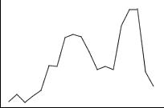

- Trend
- Dies bezieht sich auf
langfristige Zu-und Abnahmen der
Werte. Die Identifizierung von Trends ist wichtig, um
zukünftige
Werte vorherzusagen.
- Saisonale Variation
- Die siasonale Variation ist oft deutlich in monatlichen oder vierteljährlichen Daten ersichtlich und verweist auf ein Muster, das sich jedes Jahr wiederholt. Zum Beispiel ist die Temperatur jedes Jahr in den Wintermonaten am niedrigsten und im Sommer am höchsten.

- Zyklische Variation (AutoKorrelation)
- In einigen Zeitreihen neigen aufeinanderfolgende Werte dazu ähnlich den benachbarten Werten zu sein, aber, anders als in einer Situation, in der es einen Trend gibt, gibt es keine systematische Tendenz zur Erhöhung oder zur Verringerung der Werte. Das Zeitreihendiagramm scheint oft unregelmäßige Wellen oder Zyklen haben.

- Zufällige Schwankungen
- Dies sind "Höhen und Tiefen" in einer Zeitreihe, die nicht mit Trends, saisonalen Schwankungen oder Autokorrelation übereinstimmen.